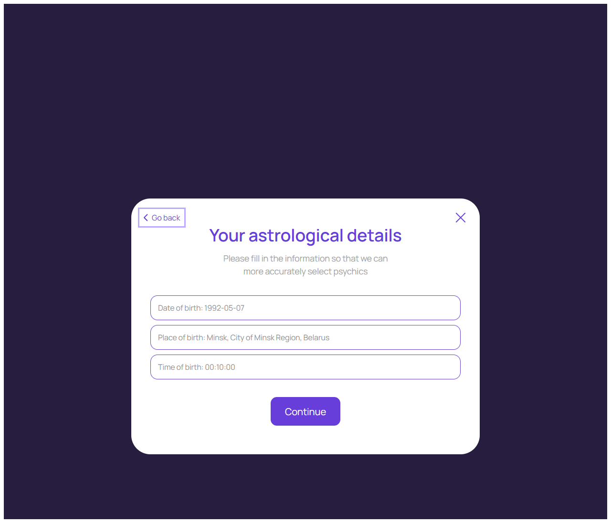
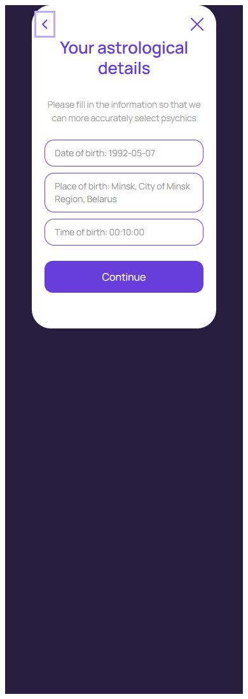

Астрологические сведения
account/astrological-details.html
Ввести предусмотренные сведения для персонализации.
| Когда открывается | Onboarding / Edit |
|---|---|
| Данные | Поля макета; timezone; версия профиля; контекст возврата. |
| Сценарий | Back/Close возвращают к инициатору; Continue валидирует и сохраняет, затем продолжает исходный подбор. |
| Переходы | Выбор темы · Подбор эксперта |
Точные обязательные поля и использование в подборе — предложение PM; сохранение не гарантирует точность прогноза.
Общая и предметная логика. Снимки и подписи элементов — исходная редакция макета; поздние уточнения ТЗ имеют приоритет в своей области. Это не проверка текущего сайта.
Состояние 1280 · 1280 × 1096


Элементы и ожидаемые действия
| Элемент | Название в макете | Действие | Ожидаемый результат |
|---|---|---|---|
| E001 Виден | Go back | Вернуться к предыдущему шагу с сохраненным черновиком. | Не записывать новые астрологические сведения без Continue. |
| E002 Виден | Close | Закрыть локальное окно или вернуться к инициатору; Stay отменяет намерение завершить. | Вернуть фокус и исходный контекст. Не выполнять оплату, удаление или Complete. При неизвестном результате платежа сначала сверить заказ. |
| E003 Виден | Continue | Продолжить подготовленный сценарий: Back/Close возвращают к инициатору; Continue валидирует и сохраняет, затем продолжает исходный подбор. | Сохранить выбранные значения после проверки. Не начать тарификацию и не списать бонус. |
Состояние 390 · 390 × 1096


Элементы и ожидаемые действия
| Элемент | Название в макете | Действие | Ожидаемый результат |
|---|---|---|---|
| E001 Виден | astrological-details__back | Вернуться к предыдущему шагу с сохраненным черновиком. | Не записывать новые астрологические сведения без Continue. |
| E002 Виден | Close | Закрыть локальное окно или вернуться к инициатору; Stay отменяет намерение завершить. | Вернуть фокус и исходный контекст. Не выполнять оплату, удаление или Complete. При неизвестном результате платежа сначала сверить заказ. |
| E003 Виден | Continue | Продолжить подготовленный сценарий: Back/Close возвращают к инициатору; Continue валидирует и сохраняет, затем продолжает исходный подбор. | Сохранить выбранные значения после проверки. Не начать тарификацию и не списать бонус. |